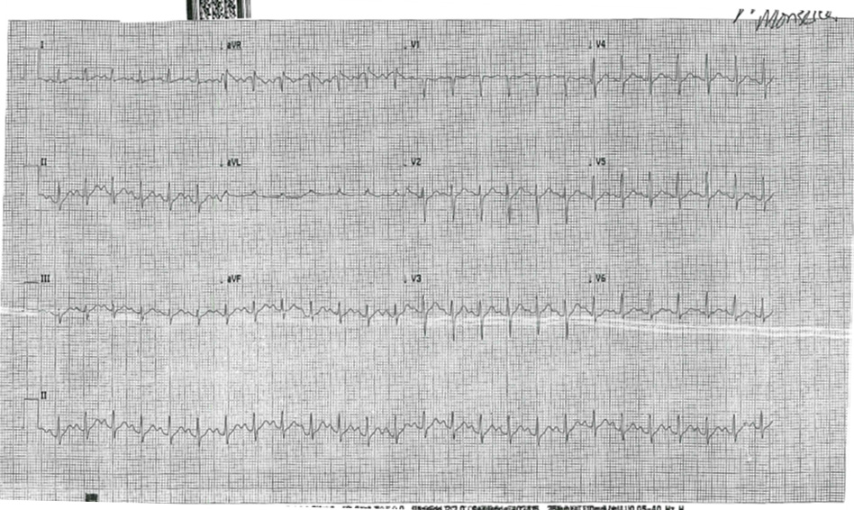
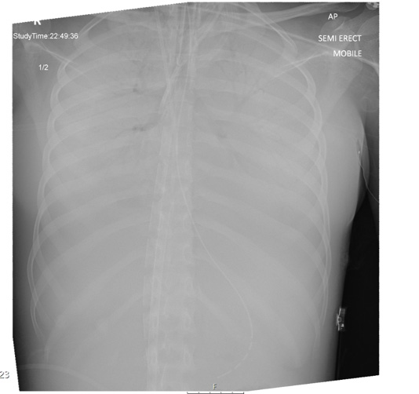

- 19 year old female patient presented to ED
- 5/7 vomiting,fevers,intermittent abdominal pain,myalgia,weakness
| Vital signs |
| RR |
22/min |
| Sats |
94% O2 |
| HR |
140-150 bpm SR |
| GCS |
15/15 |
Past medical History
- 6 weeks ago came to UK from Brazil
- Partner witnessed that she c/o palpitations occasionally & joint pains
fig: ECG

fig: CXR

Escalation of management
On presentation she was in extremis: she was hypoxic, acidotic and hypotensive and therefore she was referred for ECMO
| ABG |
| PH |
7.30 (7.35-7.45) |
| PCO2 |
5.88 (4.5-6) |
| PO2 |
11.9 (9.5-14) |
| HCO3 |
20.9 (22-30) |
What investigations should take place next?
Go to the next slide (click on the arrow to the right)